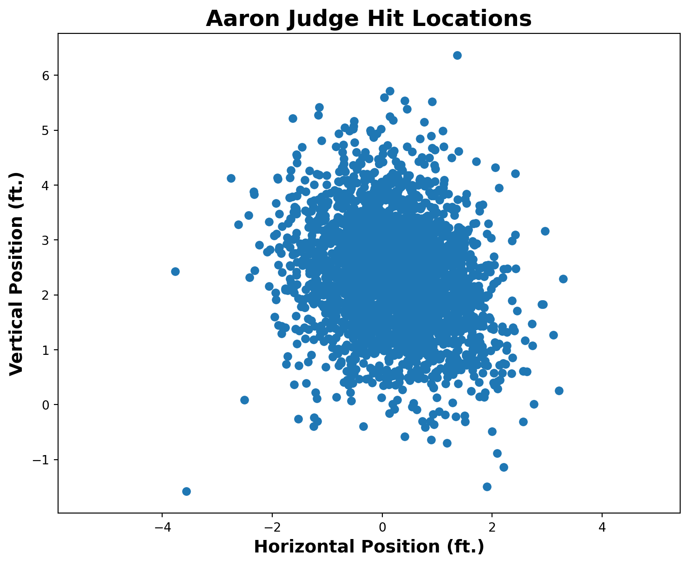
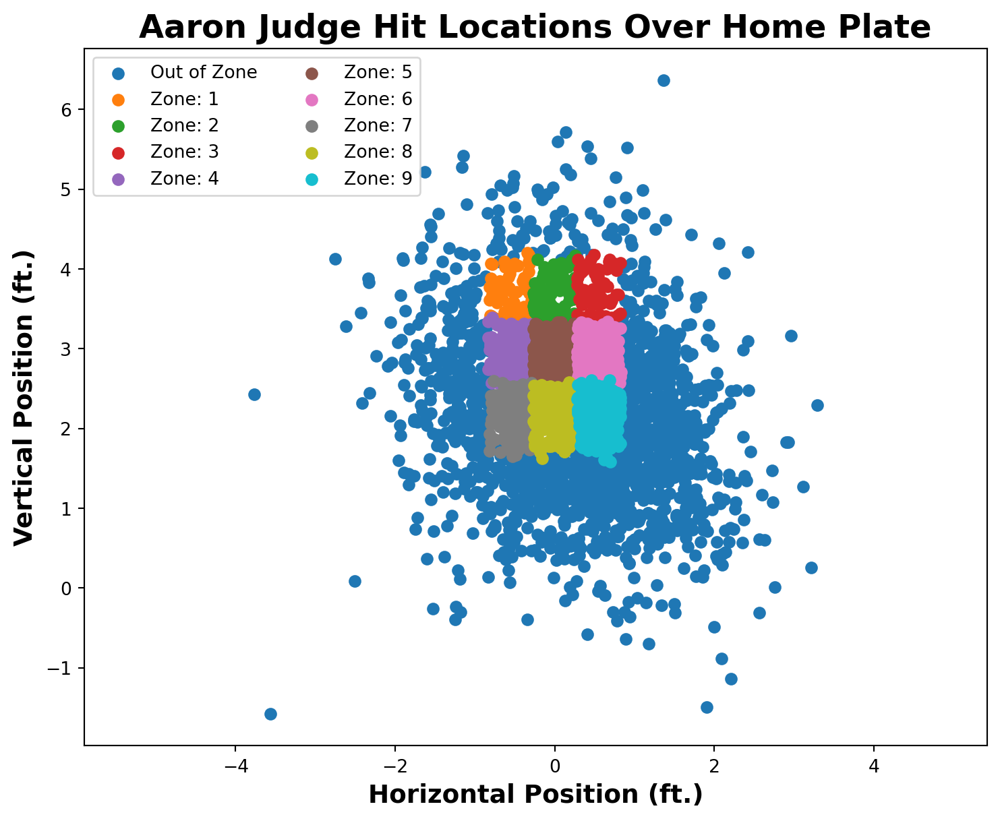

import pybaseball as pyballjudge_data = pyball.statcast_batter(start_dt='2024-03-28',end_dt='2024-09-29',player_id=592450)platex = judge_data['plate_x']platez = judge_data['plate_z']judge_data.head()
pitch_type
game_date
release_speed
release_pos_x
release_pos_z
player_name
batter
pitcher
events
description
...
n_thruorder_pitcher
n_priorpa_thisgame_player_at_bat
pitcher_days_since_prev_game
batter_days_since_prev_game
pitcher_days_until_next_game
batter_days_until_next_game
api_break_z_with_gravity
api_break_x_arm
api_break_x_batter_in
arm_angle
0
FF
2024-09-28
94.9
-0.03
6.40
Judge, Aaron
592450
681347
strikeout
swinging_strike
...
1
1
NaN
2.0
NaN
7
0.94
0.57
0.57
57.6
1
CH
2024-09-28
86.5
-0.55
6.48
Judge, Aaron
592450
681347
NaN
ball
...
1
1
NaN
2.0
NaN
7
2.29
1.72
1.72
47.7
2
FF
2024-09-28
94.7
-0.08
6.43
Judge, Aaron
592450
681347
NaN
foul
...
1
1
NaN
2.0
NaN
7
1.16
0.83
0.83
58.3
3
SL
2024-09-28
87.5
-0.49
6.34
Judge, Aaron
592450
681347
NaN
ball
...
1
1
NaN
2.0
NaN
7
2.33
-0.47
-0.47
45.2
4
CU
2024-09-28
79.4
-0.40
6.36
Judge, Aaron
592450
681347
NaN
called_strike
...
1
1
NaN
2.0
NaN
7
4.84
-0.44
-0.44
53.6
5 rows × 113 columns
6.3 Scatter Plot of Hit Locations
Let’s make a scatter plot Judge’s hit locations over the home plate.
import matplotlib.pyplot as pltplt.figure(figsize=(9,7))plt.scatter(platex,platez)plt.title('Aaron Judge Hit Locations',weight='bold',fontsize=18)plt.xlabel('Horizontal Position (ft.)',weight='bold',fontsize=14)plt.ylabel('Vertical Position (ft.)',weight='bold',fontsize=14)plt.show()

6.4 Hit Location Colored by Exit Velocity
Let’s make a scatter plot Judge’s hit locations over the home plate colored by his exit velocity.
plt.figure(figsize=(9,7))plt.scatter(platex,platez,c=judge_data['launch_speed'],cmap='plasma')plt.colorbar(label='Launch Speed (mph)')plt.title('Aaron Judge Hit Locations',weight='bold',fontsize=18)plt.xlabel('Horizontal Position (ft.)',weight='bold',fontsize=14)plt.ylabel('Vertical Position (ft.)',weight='bold',fontsize=14)plt.xlim(-1.5,1.5)plt.show()
6.5 Aaron Judge’s Hit Locations by Zone
Statcast categorizes the hit location on a 9x9 grid. Each grid has a unique zone number. A ball out side the grid is out of zone and in the strike zone. Here is how the grid is defined.
Let’s make a scatter plot Judge’s hit locations over the home plate colered by the zones.
judge_data['in_zone'] = judge_data['zone'].apply(lambda x: f'Zone: {str(int(x))}'if x inrange(0,10) else'Out of Zone')plt.figure(figsize=(9,7))for category, group in judge_data.groupby('in_zone'): plt.scatter(group['plate_x'],group['plate_z'],label=category)plt.title('Aaron Judge Hit Locations Over Home Plate',weight='bold',fontsize=18)plt.xlabel('Horizontal Position (ft.)',weight='bold',fontsize=14)plt.ylabel('Vertical Position (ft.)',weight='bold',fontsize=14)plt.legend(ncols=2)plt.show()

6.6 Kernel Density Estimate - Pitch Locations
In the plot above, it is difficult to visualize where majority of the balls are landing. A 2D Kernel Density Estimate (KDE) plot visualizes the probability density of two continuous variables by smoothing data points using a kernel function, typically represented with contour lines or a heatmap. In Seaborn, a Python data visualization library, this can be easily created using sns.kdeplot(), helping to identify clusters, relationships, and density patterns in bivariate data.
import seaborn as snsplt.figure(figsize=(9,7))sns.kdeplot(data=judge_data,x='plate_x',y='plate_z',cmap="Reds", fill=True, thresh=0)plt.title('Aaron Judge Pitch Positions Over Home Plate',weight='bold',fontsize=18)plt.xlabel('Horizontal Position (ft.)',weight='bold',fontsize=14)plt.ylabel('Vertical Position (ft.)',weight='bold',fontsize=14)plt.show()
6.6.1 Adding a Strike Zone Box
import matplotlib.patches as patchesfig, ax = plt.subplots(figsize=(9,7))sns.kdeplot(data=judge_data,x='plate_x',y='plate_z',cmap="Reds", fill=True, thresh=0)ax.set_title('Aaron Judge Pitch Positions Over Home Plate',weight='bold',fontsize=18)ax.set_xlabel('Horizontal Position (ft.)',weight='bold',fontsize=14)ax.set_ylabel('Vertical Position (ft.)',weight='bold',fontsize=14)in_zone_data = judge_data[judge_data['in_zone'] !='Out of Zone']min_x = in_zone_data['plate_x'].min()max_x = in_zone_data['plate_x'].max()min_z = in_zone_data['plate_z'].min()max_z = in_zone_data['plate_z'].max()rect = patches.Rectangle((min_x,min_z),max_x-min_x,max_z-min_z,facecolor='none',edgecolor='black',linestyle='--',linewidth=3,label='Strike Zone')ax.add_patch(rect)plt.legend(fontsize=12)plt.show()